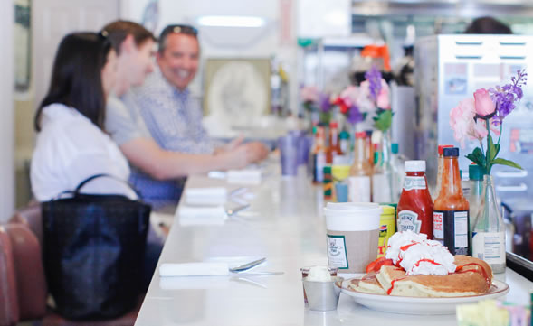
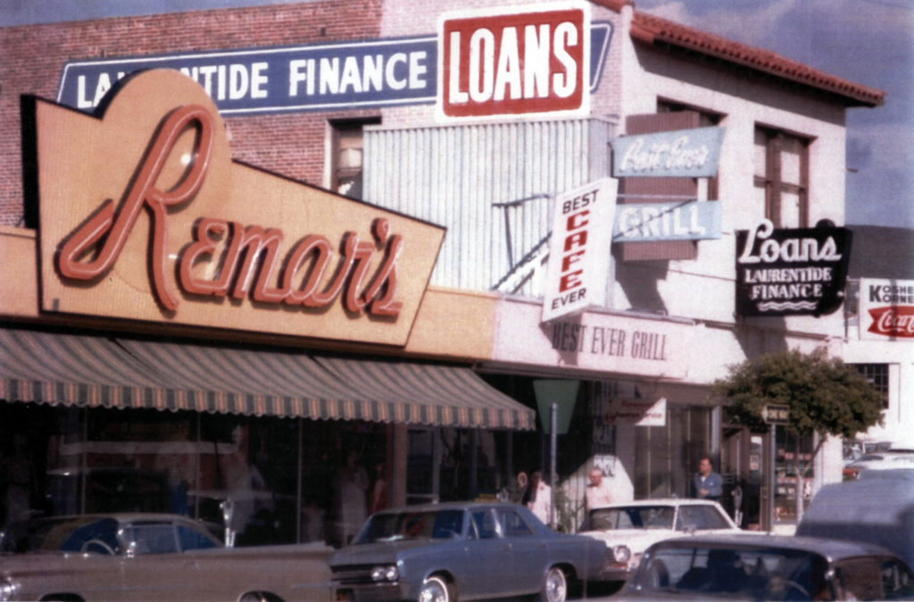
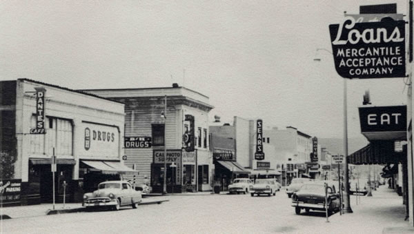

Over the years Louisa's has become a San Luis Obispo fixture here on Higuera St. A favorite among Cal Poly and Cuesta College students, their families, locals, regulars, tourists, travelers and visitors.
We are proud to have been voted "Best Breakfast" in SLO County over fifteen times (New Times) and four years in a row by Cal Poly students (Mustang News). In addition to other awards including "Best Wait Staff," "Best Salsa," "Best Burger," Trip Advisor's "Award of Excellence" and Outstanding Yelp reviews, the classic counter has been feature in a music video and the front of the restaurant in a Kashi commercial. Louisa's has been recommended by and written up by Vibe Magazine, Sunset Magazine, The Tribune, New Times, Central Coast Magazine and Visitor's Guide.
 